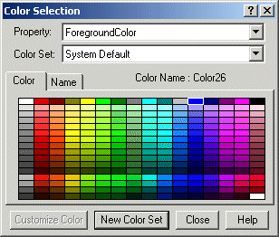
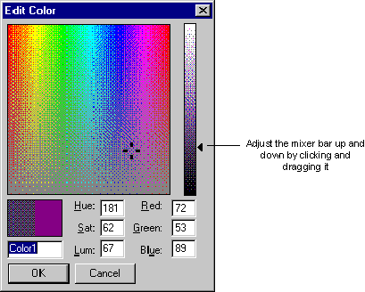

Designing your pictures
Developing a strategy for your pictures is a lot more than defining a picture type and window size. Key to picture design is deciding what information is shown together and how to present that information to the operator.
You can apply many strategies to help you achieve the maximum performance from your pictures. Employing these strategies can make your development easier and less costly.
Some of the more effective strategies you can implement include:
Speeding development time.
Improving performance by using the tools that DeltaV Operate gives you.
Making the design flexible so that you can easily maintain pictures.
Securing pictures so they are accessible to specific users.
Design Tips
We recommend that you keep the following tips in mind when designing your pictures:
Use the tools that DeltaV Operate provides you to accomplish the job. Using the tools available to you helps you quickly implement your process development strategy. Examples: using Dynamos for common object groups; using screen regions to determine color schemes; using Find and Replace to locate and change data; using Experts to add scripts to objects.
Get data once. Because DeltaV Operate allows you to obtain your data from a variety of sources and use that data throughout the open environment of DeltaV Operate, you only need to hook to that data source once. So, for example, if you want to attach a data source to many objects in your picture, you can do so by distributing the data from one object throughout your picture. There is no need to fetch data again or re-transform that data to assign or animate properties throughout your picture.
Use color only when it enhances the picture and makes it easier to use. Overusing colors, or using an ineffective color strategy, can do more harm than good to your picture design. For help in designing a color strategy, refer to Working with Color later in this topic.
Avoid display clutter. Simplicity means less options which allows the operator can easily scan for abnormal values and makes the display easier to use. Create a focal point with subtle supporting information.
Data is not information. Information is the pertinent data that allows the operator to assess the condition of the process. Information can be represented with symbols and colors, provided that the display does not become cluttered with either.
Instead of creating pictures to monitor points, use the Scheduler. Using pictures to monitor the value of a point can be ineffective, as scripts may run continuously and never run to completion. Rather than run a looping script, the Scheduler waits for an event to occur before it triggers a point. For more information on the Scheduler, refer to The Scheduler .
There is no one right display design, except the one that works in your operator's environment. So test the displays with the same equipment and same environment (light, dust, distractions) as the operator will have.
Finding and Replacing Data in Pictures
Many process environments are expansive, and their size may require that pictures have multiple links to many data sources. Should managers need to reroute certain data to another node, or globally change a data source throughout a plant, they need to do so quickly, without disrupting operation or utilizing valuable resources. The Find and Replace feature in DeltaV Operate makes this possible.
To search and replace data in your pictures, select Find and Replace from the Edit menu and complete the appropriate fields on the Find and Replace dialog box. For detailed information on Finding and Replacing data, refer to Finding and Replacing Data.
Working with Color
General human factors literature recommends that the use of color coding should be kept to around 7 colors. Color coding is the practice of using a color to indicate information. For example, a red DeltaV alarm is, by default, a critical alarm. However, as more items are color coded, it becomes more difficult for operators to remember what the different colors mean. While you may find the need to exceed the recommendation of 7 colors, you should strive to limit the excessive use of color coding.
If you have displays with a large amount of color coding, it is helpful to create a color key and add it to the operator graphics where the colors are used. That way, the operator has a quick reference for each color.
While it is recommended that the coded colors (where the color is significant) should be kept to around 7 colors, additional colors can be used in your graphic. For example, you might want to make information more visually distinctive or pictures more appealing through the use of colors. These colors should be soft (non-saturated) and blend with the display background and static tank colors such that they do not visually distract the operator. These additional colors do not count towards the ideal 7 coded colors. Using the DeltaV themed color sets assist in keeping the colors on the screen in the same color palette.
The first step in picture design should be to determine the colors you will deploy throughout your pictures. Alarm colors are typically the most important colors to define; and therefore, drive your other color selections. The default DeltaV alarm colors are red, yellow and purple.
The colors selected as alarm colors should only be used for alarms. Therefore, if you use red as an alarm color it should not also be used to indicate that a pump is off. Similarly if yellow is an alarm color, it should not be used as a pipe or PV color.
Alarm colors are defaulted to bright, saturated colors because these colors draw attention. The use of these saturated colors, as well as cyan, bright blue, and bright green, should be limited to items requiring operator attention. For example, a pipe that should not be empty or a relief valve that is open can be shown in bright blue to make the unusual condition more obvious to the operator. Be careful to minimize your use of saturated colors on a display so that the items that are most important visually stand out.
These saturated alarm colors are also classified as hot colors. To create a display that allows alarms to be distinctive, less saturated cool colors (for example, grays, blues, and greens) should be used.
Any status indication shown in a picture should also be distinctive, although typically less important than alarms. DeltaV themed color sets use a single, saturated color to indicate status.
Selection of the picture background color is your next step. Select the background color so that the alarm and status colors are distinctive.
Text and numbers must be distinctive on your selected background for optimum readability in the operator's environment. If you select a grey background color, text on that background should be a very dark grey to be readable.
The tanks, pipes, and so on, on your picture provide a focal point for operators and help operators quickly recognize and verify that they are on the correct picture. Take care to make these items distinctive but not distracting.
The colors used, or color theme used, along with what is animated (that is, changes color, visibility and movement) can be effectively used to draw the operators' attention.
The color depth of your display defaults to 32 bit. With this setting, you can:
View colors by name. By clicking a tab, you can view all of the available colors by name, giving you an easy way to select across a color spectrum without choosing from a palette.
Customize your colors. You can assign unique colors and create a custom palette. If you are using named colors, you can give the color a specific name. Refer to the Using Named Colors section below for more information.
Color as you go. Using the Color Selection dialog box, you can edit as many objects as you like while the dialog box remains on your screen.
Select which property you want to modify. You can select the property you want to modify (foreground, background, or edge color).
Always check your color selections in the work environment (lighting, near other displays, on same monitors) to fully evaluate the colors for visibility, contrast and compatibility.
If you change the screen resolution, it may be necessary to reset the color depth setting to 32 bit.
Themed Color Sets
DeltaV Operate provides standard color sets and dynamo sets that are themed. All themed color sets are named with the word Theme and the base color for that set (for example, Shades of Tan Theme). Each color theme is defined in a color threshold table (for example, Theme_Colors_Tan,) located in frsVariables.
All themed dynamo sets are named _Theme and use the Theme_Colors threshold table. If you change the theme color from Theme_Colors_Silver to another (Theme_Colors_Tan, for example), the _Theme dynamos will have the new color threshold table definition (Theme_Colors_Tan).
| Color threshold table | Used for |
|---|---|
| Theme_Colors |
Main pictures |
| BorderEdgeColor |
Borders/Edges |
| Theme_Colors_ALM_TB |
Alarm Banner |
| Theme_Colors_FP_DD |
Faceplates |
Each themed color set contains the complimentary and contrasting colors defined for many possible values. Colors are used to draw attention to important items using contrasts and are used to create a focal point for operators. Colors are also used to keep the supporting information subtle by using complimentary colors. Keeping the colors to one palette or tone helps to create a pleasing visual; especially considering the operators must look at one display for many hours and if the display is discordant, then operator eye strain and mental fatigue can result.
Each themed color set has contrasting colors that can be used when animating objects. Since a contrasting color draws attention to an object, it should be used only when an object is out of range or in alarm. Using a contrasting color too frequently (or for too frequent of a change) reduces the effect and will tend to be ignored over time. Using too many contrasting colors make remembering what the colors signify difficult.
Using the same themed color set for all objects on the picture, for all accessible popup pictures ( such as faceplates and detail displays), as well as for the picture background color assures that the colors will work well together without one color obscuring another.
The colors used in the DeltaV themed color sets were selected based on their impact in attracting operator attention. The order is defined as:
Alarms
Display information
tag name / value label color
large/background equipment color and label color- want to visually ground the user
Pipe fixed color - just shows where pipes are in the process, optionally different types
Note:Theme pipe colors were defined for use with line width of 1. For pipes that are thicker, less distinct colors may be needed, unless there is a particular reason to draw attention to that pipe.
You can easily change the default DeltaV Theme Color to better match your operating requirements using the Duplicate Color Table utility. The default for the Theme_Colors threshold table is the Theme_Color_Silver table. For more information on changing DeltaV Operate themes or using the Duplicate Color Table, see DeltaV Operate Pictures Help.
You can also view all the colors defined in a color set by selecting the threshold table (Theme_Colors_Tan, for example), right-clicking and selecting Custom from the context menu. The threshold table lists the color, what it represents (Dynamo background, for example), the RGB value (red, green, blue components of the color) and the color swatch. You can duplicate the color table and add to the rows. When adding, be sure to select your colors from the same color set (Shades of Tan, for example,) in the color selection window.
Modal versus Modeless Color Selection
You can incorporate color to your objects in two ways:
Selecting a Foreground, Background, or Edge Color to a specific object using the modal Select Color dialog box. The modal color box is used to apply a color only to the object selected. Once you select a color, you click OK and the dialog box closes.
Selecting a color to one or more objects, or designing a custom color set, using the modeless Color Selection dialog box. The modeless color box is used to color as many objects as you like, as it stays on your screen as you jump from object to object in your picture.
The following sections detail how to incorporate colors into your pictures using both methods.
Adding Colors to a Selected Object
You can specify foreground, background, and edge colors using the modal Select Color box, shown in the following figure.

This dialog box is accessed by right-clicking an object you want to color, selecting Color and either Foreground, Background or Edge from the menu . The dialog box contains two tabs that let you choose your color from a palette or from a list of names. Select a color by either clicking the color in the palette or by clicking the name in the list. You can change color sets (palettes) by selecting a set from the list in the Color Set: field.
If using one of the Theme color sets, be sure that you use that same color set for every object on the picture as well as the picture's overall background and any animations. Keeping to the same themed color set creates an overall palette of colors that works well together.
Default color selections appear in the Shape Preferences tabbed page of the User Preferences dialog box.
You can also specify a background color for your picture using the Edit Picture dialog box or Shape Preferences tabbed page. For more information, refer to Setting the Picture Background Color in the Working with Pictures - Basic Functions topic.
Adding Colors to Multiple Objects
You can specify foreground, background, and edge colors to as many objects as you like using the modeless Color Selection box, shown in the following figure.

Because the Color selection box remains on your screen as you add or modify objects in your picture, you can make changes to your objects without having to exit and re-enter the dialog box. To access the Color Selection dialog box, click the Color button on the Tools toolbar or the Toolbox, if enabled.
The Color Selection dialog box contains two tabs that allow you to display the default system colors in either a color palette or a list. To select a color, click a color in the palette or click a name in the list.
The Color Set field displays the current default color set being used, and it also contains any custom sets you may have created. You can create a new custom set from the list provided, or create your own custom set using a customization palette. All palettes are automatically saved when DeltaV Operate shuts down.
In the Property field, you can choose the foreground, background, or edge property to assign to the selected color. That property changes when you change a color in the dialog box.
Using Custom Colors in Duplicated Objects
If you tie a custom color to the foreground of an object and duplicate the object, the custom color link will not be retained in the duplicates of the object. The duplicates will only take the color of the custom color at the time they were duplicated, future changes to the custom color will only update the original object.
Using Named Colors
Each color in the color box is named based on its location in the color spectrum. Changing a color in a palette changes the name of that color in the name list. When creating custom color sets, you can assign custom names to colors. Each color name appears in a list, allowing you to select across multiple palettes quickly and easily. If an object uses a named color and the color is deleted or renamed, the object reverts to its numeric color value.
The list of named colors is saved when DeltaV Operate shuts down.
Using the Edit Color Palette
The Edit Color palette is a grid of colors ranging from red to violet that let you select a custom color of your choice. You can select any color from the palette by clicking the mouse. A four-mark cursor appears.
The slider to the right of the matrix is called a mixer bar. To specify the shade of the color spectrum you selected in the matrix, adjust the mixer bar. A black arrow appears next to the area you have selected. You can also change the shade of the color by adjusting the mixer bar up and down, as the following figure shows.

Applying Background Colors
When specifying background colors for your objects, be aware that certain colors or fill patterns may not work effectively, as they may be hidden or offset by the foreground. You can also set a background color for your pictures. For more information, refer to Setting the Picture Background Color in the Working with Pictures - Basic Functions topic. Or, use a themed color set for all objects in the picture (for example, Shades of Dark Blue Theme color set).
Securing Your Pictures
DeltaV Operate's picture protection prevents unauthorized users from accessing or modifying pictures, or performing unauthorized actions on the pictures. To configure security for your picture, enter a security area in the Properties window.
Secure Containment
DeltaV Operate offers a unique security feature called secure containment, which protects your pictures in DeltaV Operate in the event that a third-party control fails.
For example, if you add an OCX to your picture in DeltaV Operate, and the OCX crashes, an exception is created. DeltaV Operate detects this exception and isolates it so that your system keeps running. By securing your application as part of DeltaV Operate, DeltaV Operate ensures that your pictures are saved even during an unlikely, yet potentially troublesome, event.